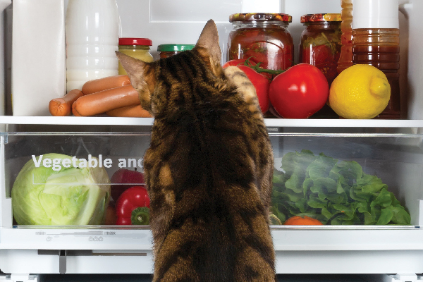
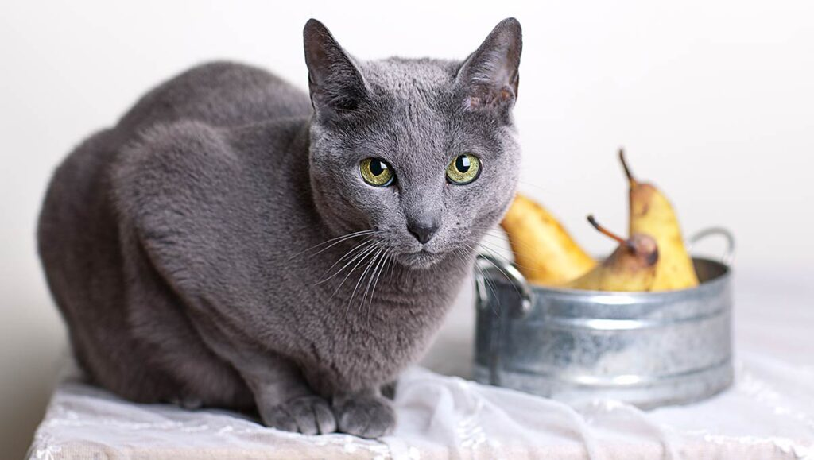
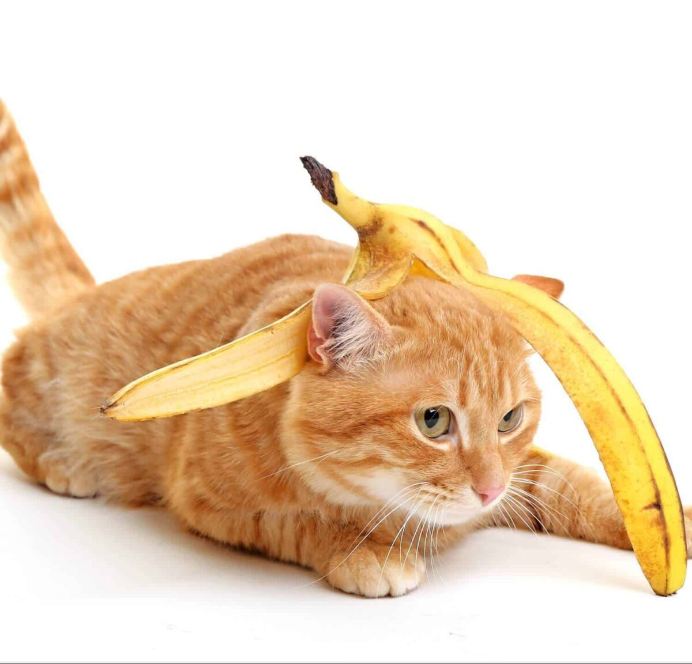
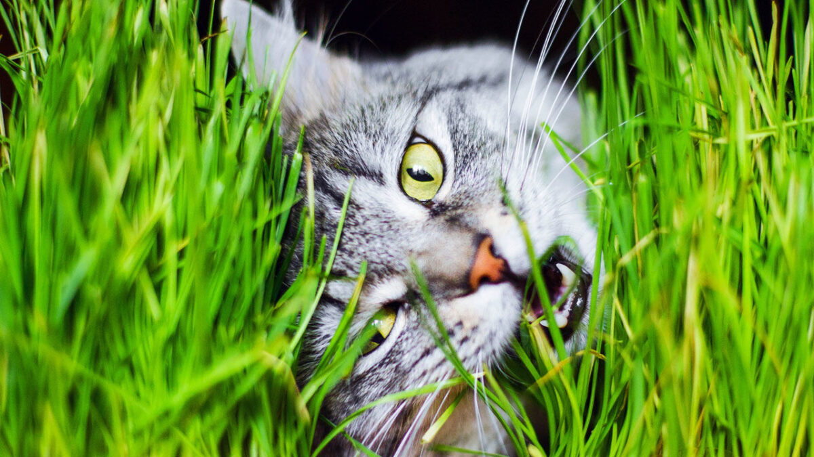

همهی ما میدونیم که وجود میوه و سبزیجات توی رژیم غذاییمون چقدر اهمیت داره و روی سلامتیمون تاثیر میگذاره. حالا سوال اینه که اگه صاحب یه گربهی بامزه باشیم میتونیم همهی این فواید رو با گربمون تقسیم کنیم؟ اصلاً گربه میوه میخوره؟ میوهها و سبزیجات برای گربه ها هم مفیدن یا خوردنشون برای گربهها مضره؟
خیالت راحت ما این راهو بلدیم! توی این مطلب پت پرس میخوایم جواب این سوالها رو بررسی کنیم و میوهها و سبزیجات مناسب برای گربهها رو معرفی کنیم.

رژیم غذایی مناسب برای گربهها
گربهها «گوشتخوار اجباری» هستن و گوشت اصلیترین بخش رژیم غذایی گربه رو تشکیل میده. البته گربه میتونه طیف متنوعی از سبزیجات و حبوبات و غلات رو هم بخوره. این مدل تغذیه، زندگی با گربه دلبندمون رو خوشایندتر هم میکنه. چون میتونیم خوراکی خودمون رو باهاش سهیم بشیم.
به طور کلی رژیم غذایی مناسب برای گربه باید شامل مواد زیر باشه:
- پروتئین انواع گوشت قرمز، مرغ، ماهی یا سایر منابع گوشتی
- تورین که یک اسید آمینوی بسیار ضروری و مفیده.
- برخی ویتامینها، مواد معدنی، آنزیمها و اسیدهای چرب
- آب

گربهها «نیاز» به کربوهیدرات ندارن؛ با این حال در بسیاری از غذاهای گربه از موادی مثل سیب زمینی، گندم و برنج به عنوان سیرکننده استفاده میشه که اگه به مقدار زیاد نباشه ایرادی هم نداره.
همونطوری که میدونید گربهها توی سنین و دورههای مختلف زندگیشون به رژیمها غذایی و کالریهای متفاوتی احتیاج دارن. مثلاً نیازهای غذایی گربه توی دوران بارداریش با دوران رشدش متفاوته. پس با در نظر گرفتن سن و شرایط زندگی گربهتون رژیم غذایی مناسب رو باید انتخاب کنید. این مساله برای خیلی از ماها میتونه گیج کننده باشه. اگه دوست دارید تمام نکات تغذیهای مربوط به دوران مختلف زندگی یه گربه رو یاد بگیرید، مقالهی همهچیز در مورد غذای گربه و نکات مهم تغذیهای هیچ نکتهای رو از قلم ننداخته.
اما فراموش نکنید که گربهها نمیتونن و نباید «گیاهخوار» بشن و رژیم غذایی کاملا گیاهی برای گربهها بسیار خطرناک و مضره. بالانس کردن ترکیبات غذای خانگی برای گربه کار هر کسی نیست. شما باید از یه دامپزشک برای میزان استفاده از هر ماده غذایی مشورت بگیرین تا به گربهتون آسیب نزنین.
کافیه مشخصات گربهتون مثل نژاد، سن، وزن، میزان فعالیت و … رو به دامپزشکهای پت پرس بدین و بعد، برنامه غذایی که اختصاصا برای گربهتون نوشته شده رو تحویل بگیرید.
سفارش آسان از طریق اپلیکیشن پت پرس

آیا میوه و سبزیجات برای گربهها مفیدن؟
همونطوری که گفتیم گربهها گوشتخوارن و رژیم غذاییشون باید بر اساس پروتئین باشه. پروتئینهای حیوانی شامل تورین که یه آمینو اسید ضرروری برای گربهها هست و برای قدرت بینایی گربه خیلی مهمه، میشه. اگه غذایی که برای گربهتون انتخاب کردید ترکیب متعادلی از نیازهای غذایی گربه رو شامل شده باشه، نیازی به میوه و سبزیجات اضافهتر نیست.
رژیم غذایی گربهها و کالری
یکی از مشکلات جدی که صاحبین گربهها باهاش مواجه هستن، چاقی توی گربههاشونه. گربههایی که فعالیت زیادی ندارن باید میزان کمتری کالری دریافت کنن تا به بدنشون آسیب نرسه. چاقی بیش از حد میتونه باعث مشکلات زیادی مثل دیابت بشه. پروتئینهای حیوانی مورد نیاز گربهها رو نمیشه با پروتئینهای گیاهی جایگزین کرد. جایی که برای دادن میوه و سبزیجات به گربهتون دستتون بازه، دادن اونا به عنوان تشویقی گربه هست.
اگه بتونید میوه و سبزیجاتی که توی لیست غذاهای مضر برای گربه نیستن رو به عنوان تشویقی به گربهتون بدید، تشویقیهای پر کالری رو با یه تشویقی ارگانیک جایگزین کردید.

غذای خانگی برای گربه
غذای خونگی مزایای زیادی برای گربه داره و روز به روز آدمای بیشتری به جای غذای گربه تجاری به گربهشون غذای خونگی میدن. غذای خونگی خوشمزهتره، از مواد تازه و باکیفیت تهیه شده، توش از مواد غذایی مورد علاقه گربه استفاده میشه و در ضمن باعث کاهش هزینهها میشه.
ولی حواستون باشه هر غذایی برای گربهها مفید نیست! غذای خانگی گربه باید ترکیبات و موادش بالانس شده و متناسب با نیازهای تغذیهای گربه باشن تا بشه به عنوان یه رژیم غذایی کامل و مناسب روش حساب کرد.

چرا بعضی از میوهها و سبزیجات برای گربهها ممنوع هستن؟
بدن گربهها نسبت به ما انسانها به میزان کمتری ویتامین و مواد معدنی احتیاج داره. زیادی این مواد توی بدنش میتونه باعث مشکلات مختلفی مثل کمخونی شدید، مشکلات کلیوی و … بشه. از طرفی مصرف کمترین میزان میوه های ممنوعه برای گربه میتونه باعث آسیب جدی بهش بشه.
لیست سبزیجات و میوه های مضر برای گربه
میوه و سبزیجات مضر برای گربه ها شامل موارد زیر میشن:
- پیاز: آسیب به گلبولهای قرمز گربه.
- سیر: مثل پیاز میتونه منجر به کمخونی بشه.
- پیازچه: این مورد هم شبیه به دو گزینه بالاست.
- انگور و کشمش: منجر به مشکلات جدی گوارشی و حتی نارسایی حاد کلیه میشه.
- لیمو: میتونه سیستم عصبی گربه رو مختل کنه و سیستم گوارش رو بهم بریزه.
- آووکادو: ترکیبات این میوه برای گربهها سمی به حساب میاد.
- گوجه: ساقه و برگ این گوجه فرنگی برای گربه سمیه و خودش رو میتونه مزه کنه اما ارزش غذایی براش نداره.

علائم مسمویت غذایی گربه با میوه و سبزیجات چه چیزهایی هست؟
علائم مسمویت غذایی گربه با میوه و سبزیجات دامنهی وسیعی دارن. این علائم میتونن شامل موارد زیر بشن:
- استفراغ
- اسهال
- افسردگی گربه
- کم اشتهایی
- تب
- سختی در تنفس
- رنگ پریدگی بینی
- پر رنگی ادرار
اگه بعد از خوردن هر کدوم از میوه و سبزیجات ممنوعه یکی از این علائم رو دیدید خیلی سریع به دامپزشک مراجعه کنید. هرچقدر زمان بیشتری رو از دست بدید درمان گربه برای دامپزشک سختتر میشه.
خب حالا که در مورد میوه و سبزیجات ممنوعه و اهمیت شناختشون مطلع شدید بیایید ببینیم چه میوه و سبزیجاتی برای گربهها خوب و مفیدن.
لیست میوه و سبزیجات مجاز برای گربهها
مصرف میوه برای گربه توسط دامپزشکها توصیه میشه. اما یادتون باشه میوهها میزان بیشتری شکر دارن پس اگه نمیخواید گربهتون اضافه وزن پیدا کنه یا هدفتون کاهش وزنش هست بهتره که روی سبزیجات مجاز برای گربه تمرکز کنید و میوهجات کمتری به گربهتون بدید. حواستون باشه که تخم بعضی از میوهها مثل سیب و گلابی دارای «سیانور» هست. این ماده میتونه باعث اختلال توی سیستم عصبی گربه و حتی تشنجش بشه.

میوهها
لیست میوه های مجاز برای گربه شامل موارد زیر میشه:
-
سیب
سیب یکی از میوههای مناسب برای گربه هست که سرشار از ویتامین های A، C، E و B و پلی فنول است که تو هضم راحت غذا خیلی به گربه کمک میکنن. علاوه بر این سیب مقدار زیادی فیبر داره و همینطور چربی خیلی خیلی کمی داره. سیب برای گربههایی که متابولیسم پایینی دارن، سنشون زیاده و باید وزنشون کاهش داده بشه، عالی هستن. ویتامین A و C موجود در سیب توی سلامتی پوست و استخوانهای گربه هم موثرن.
فقط یادتون باشه که هسته و ساقه سیب برای گربه سمیه و باید اونا رو ازش جدا کنین و بهش بدین.
-
گلابی
گلابی برای گربهها بی خطره و فقط مثل سیب باید هسته و شاخهاش رو جدا کنین. از اونجایی که گربهها گوشتخوارن، دادن یه مقدار گلابی بهشون مشکلی نداره. تازه این میوه فیبر و ویتامین k بالایی داره. ولی گربهها نباید بیش از حد گلابی بخورن چون باعث تحریک معدهاش و بهم ریختن هضمش میشه.
-

-
زردآلو
زردآلو سرشار از بتاکاروتن و پتاسیم هست. این دو ماده توی مبارزه با سرطان فوقالعاده هستن. حواستون باشه که برگهای زردآلو برای گربه سمی هستن. حتما چوب و هستهش رو از قبل جدا کنید. هلو و خرمالو برای گربه مفید هستن و خاصیتی مثل خاصیت زردآلود دارن. یادتون باشه که خرمالو برای گربه میتونه خطرناک هم باشه، اونم وقتی که به صورت نارس و در مقدار زیاد بهش داده باشه.
-
ملون
ملون شامل تمام میوههایی مثل خربزه، طالبی و … میشه. پوست ملونها دارای یه باکتری مضر برای گربههاس پس یادتون باشه که حتماً پوست و تخمهای ملونها رو جدا کنید. اونا ره به قطعههای کوچیک تقسیم کنید و به گربهتون بدید. یادتون باشه شکر موجود توی ملونها و طالبی برای گربه زیاده. اما همزمان سرشار از مواد معدنی و ویتامینهایی مثل A و C و B هستن.
به نقل از thesprucepets خوردن بیش از حد انواع ملون و به خصوص خربزه برای گربه میتونه منجر به اسهال بشه.

-
خیار
خیار کالری خیلی کمی داری پس از این نظر عالیه. اما مقدار زیادش باعث اذیت شدن معدهی گربه میشه پس از مصرف زیادش خودداری کنید.
-
پرتقال
گربهها عاشق پرتقال نیستن اما مواد و ویتامینها پرتقال به تقویت سیستم ایمنی و خارج کردن مواد سمی بدنشون کمک میکنه. یادتون باشه هسته، پوست و چوب پرتقال نوعی روغن سمی داره پس حتماً از قبل از دادن به گربهتون ازش جداشون کنید.
-
موز
موز سرشار از ویتامین C، B6، کربوهیدرات، فیبر، منیزیم و پتاسیمه. پتاسیم موز توی کارکرد قلب و کلیههای گربه اثر مثبت داره. شما میتونین اون رو به صورت ورقه ورقه شده تازه یا منجمد شده به گربهتون بدین. اما از طرفی موز یه عالمه شکر و کربوهیدارت داره پس حواستون باشه که مقدار زیادی موز به گربهتون ندید.

-
هندوانه
هندوانه از ۹۲% آب تشکیل شده پس توی رسوندن آب لازم به بدن گربه عالی عمل میکنه. علاوه بر این میزان زیادی پتاسیم، ویتامین A و B6 و C داره. همهی این مواد، باعث بهبود عملکرد ماهیچهها و اعصاب گربه میشن.
-
انبه
انبه تمام ویتامینهای مورد نیاز گربهها و سگها رو داره. یادتون باشه که حتماً هستهش رو جدا کنید چون توی خودش سیانور داره و برای گربهها مضره
-
توت فرنگی
توت فرنگی یکی دیگه از میوههای مفید برای گربه ها هست. اون رو میتونید فریز کنید تا توی تمام سال داشته باشید و به گربهتون بدید. توت فرنگی سیستم ایمنی گربه رو تقویت میکنه و خاصیت ضد پیری داره.

خب حالا که میوههای سالم برای گربه رو شناختید بیایید کمی هم در مورد سبزیجات مفید برای گربه صحبت کنیم.
سبزیجات
از اونجایی که سیستم گوارشی گربهها برای هضم مواد گیاهی ساخته نشده، باید قبل از دادن سبزیجات به گربهتون، اونها رو آب پز یا بخارپز کنید.
بهترین سبزیجاتی مجاز برای گربه که میتونید به گربهتون بدید شامل موارد زیر هست:
-
نخود فرنگی
نخود فرنگی سرشار از آهنه اما خوبه که به گربهتون نخود فررنگی تازه بدید. نخود فرنگیها کنسرو شده دارای مواد افزودنی مثل نمک هستن که میتونه روی سلامت گربه اثر منفی بگذاره.
-
مارچوبه
مارچوبه توی رژیم غذایی ما ایرانیها زیاد جایی نداره اما اگه شما جزء اون افرادی هستید که ازش استفاده میکنید؛ ممکنه براتون سوال شده باشه که آیا میتونید به گربهتون هم از مارچوبههای خودتون بدید؟ مارچوبه یه عالمه پتاسیم، فیبر و انواع ویتامینها رو توی خودش داره. اگه گربهتون نسبت بهش علاقه نشون میده میتونید توی قطعههای کوچیک بهش بدید.

-
فلفل دلمهای
فلفل دلمهای بتاکارتن، انواع ویتامینها و فیبر زیادی داره. دادن فلفل دلمهای به گربهتون به بهبود سیستم ایمنی بدنش کمک میکنه.
-
کاهو
کاهو رو به تیکهها خیلی ریز تقسیم کنید و به گربه بدید. آب و فیبر موجود توی کاهو برای گربه یه منبع خوب تامین آب بدن به حساب میاد.
-
کلم
کلم به عملکرد بهتر سیستم گوارشی گربهتون کمک میکنه. علاوه بر این پوست و موی گربه رو هم تقویت میکنه. خوبه کلم رو کمی بپزید تا گوارشش برای گربه راحتتر بشه.

-
گل کلم
گل کلم رو به صورت پخته یا خام توی اندازهی کوچیک به گربه بدید. ویتامینها و آنتیاکسیدانهای موجود توی گل کلم، به رفع مشکلات التهابی توی گربه کمک میکنه. حواستون باشه که مقدار زیادش ممکنه معدهی دوست پشمالتون رو اذیت کنه.
-
کدو
کدو یه منبع عالی از پتاسیم، منیزیم و ویتامین C هست. مصرفش کمک میکنه که گربهتون از مشکلات قلبی، عفونتها و سرطان در امان باشه.
-
هویج
هویج سرشار از بتاکاراتون، ویتامین C و فیبره. بتاکاراتون هویج برای گربه در حفظ سلامت پوست و بیناییاش اهمیت زیادی داره. کالری کم هویج برای گربه تاثیر زیادی توی کاهش وزنش داره.
-
زیتون
گربهها عاشق زیتونن و این باعث شده که این سوال برای خیلیها به وجود بیاد که آیا زیتون برای گربه مفیده؟ واقعیتش اینه که زیتون برای گربه نه مفیده و نه ضرری براش داره. اگه گربهتون سالمه میتونید اجازه بدید هر از چند گاهی زیتون بخوره.
-
بروکلی
میزان کمی بروکلی برای گربه خیلی خوبه اما چون یه عالمه فیبر داره میزان زیادش ممکنه باعث اسهال گربه بشه.

-
لوبیای سبز
لوبیای سبز برای گربه حاوی مقدار زیادی آهن و پروتئینه. اون رو آبپز شده به گربهتون بدین. از لوبیای سبز کنسروی هم میتونین استفاده کنین اما باید بدون سدیم باشه.
-
کرفس
کرفس برای گربه کم کالریه و دندونهای گربهتون رو تمیز میکنه.
-
کدو حلوایی
کدو حلوایی یکی از سبزیجات فصلی هست که برای ایجاد تنوع میتونید به میزان کم به گربهتون بدید.
«برای سلامت گربهتون موقع پخت این سبزیجات بهشون چیزی مثل ادویهجات یا روغن اضافه نکنید.»

چه میزانی از میوه و سبزیجات مناسب برای گربهها رو توی رژیم غذایی گربم قرار بدم؟
بعضی از گربهها عاشق میوه و سبزیجات هستن. اما یادتون باشه که میوه و سبزیجات نباید بیشتر از ۱۵-۱۰ % از رژیم غذایی گربه رو به خودشون اختصاص بدن. پس همونطور که گفتیم میوه و سبزیجات مناسب رو به عنوان تشویقی به گربهتون بدید.
چرا گربهها به اندازهی سگها از خوردن میوه و سبزیجات لذت نمیبرن؟
گربهها بر خلاف سگها نمیتونن طعمهای شیرین رو حس کنن پس خیلی علاقهای به خوردن میوهها و سبزیجات نشون نمیدن.
حبوبات مناسب برای گربه ها کدومن؟
گربهها میتونن حبوبات بخورن اما چون اونا گوشتخوارن خیلی نیازی به تغذیه از حبوبات ندارن. اگه گربه شما لوبیا یا عدس پخته شده دوست داره میتونین بهش بدین. ولی باید بدونین که گربهها نیازی به پروتئین موجود تو حبوبات ندارن. درواقع پروتئین بدن اونا باید از گوشت جذب بشه. اطلاعات کاملتر در این باره رو میتونین تو مقاله غذاهای مضر برای گربه بخونین.
این رو هم به خاطر داشته باشین که حبوبات آبپز شده رو کمی له کنین. چون ممکنه به تنهایی تو گلوی گربه بپره و منجر به خفگی بشه.
هویج برای گربه به صورت پخته خوبه یا خام؟
هویج رو هم به صورت خام و هم به صورت نیم پز شده به گربه بدید. اما اغلب دیده شده که گربهها هویج آبپز رو خیلی دوست دارن. درواقع هویج پخته برای گربه گزینه ایمنتریه. چون تکههای هویج خام ممکنه تو گلوی گربه گیر کنه و باعث خفگی بشه.
چرا گربهها علف میخورن؟
علفها منبع خوبی از مواد گیاهی و ریز مغذی ها هستن. البته همونطور که گفتیم میزان زیادی از مواد گیاهی میتونه برای گربه مضر باشه. میزان زیاد علف میتونه باعث هایپرویتامینوز D بشه. هایپرویتامینوز D یه بیماری نادره اما میتونه باعث مشکلات جدی توی گربه بشه. پس اگه متوجه شدید توی مصرف علف زیادهروی میکنه جلوش رو بگیرید.
نکتهی دیگهای که باید حواستون بهش باشه اینه که علفها سمپاشی شده نباشن. ورود سم به بدن گربه ممکنه باعث اختلال توی سیستم گوارشیش بشه.
اگه نمیدونین علف گربه دقیقاً چیه و به چه کاری میاد حتماً این مطلب رو بخونین: علف گربه چیست و چه تاثیری روی گربه میذاره؟

انواع میوه و سبزیجات برای گربه حساسیتزاست؟
اگه برای اولین بار یه میوه یا سبزیجات رو به گربهتون میدید، سعی کنید میزانش کم باشه و با میوه یا سبزی دیگهای همراهش نکنید. اینطوری اگه گربه علائم خاصی رو نشون داد متوجه میشید به خاطر چی بوده. یادتون باشه همیشه با مقدار خیلی کم شروع کنید تا معدهی گربهتون اذیت نشه.
سخن آخر
ما نمیتونیم به خاطر خونگی کردن گربهها رژیم غذاییشون رو عوض کنیم. درسته که میشه از میوهها و سبزیجات مناسب برای گربه استفاده کرد. اما این به معنی کاهش گوشت و دریافت مواد مورد نیاز رو منحصر به میوههای مجاز برای گربه بکنیم. گربهها گوشتخوارن و پروتئین اصلی بدنشون از گوشت تامین میشه. اما شما میتونین کنار اون از میوههای مفید برای گربه کمک بگیرین.
یادتون باشه که برای اضافه کردن میوهها و سبزیجات مناسب برای گربه به برنامه غذاییاش، حتماً باید از دامپزشک مشورت بگیرین. سوالاتتون رو در اپلیکیشن پت پرس از دامپزشکان آنلاین ما بپرسین!